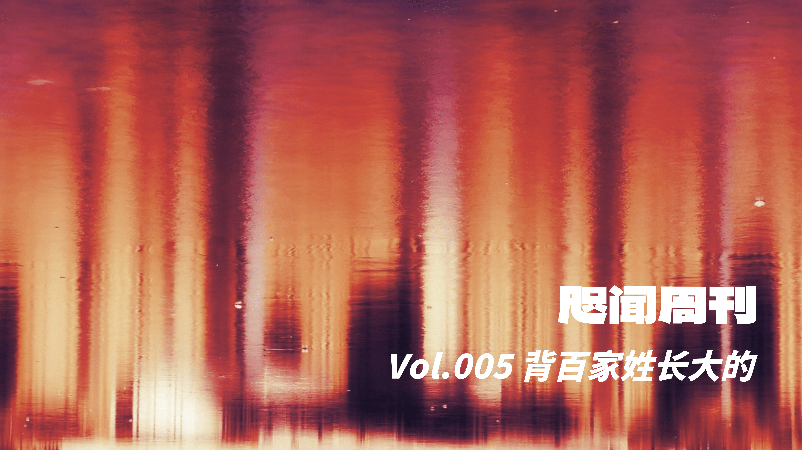
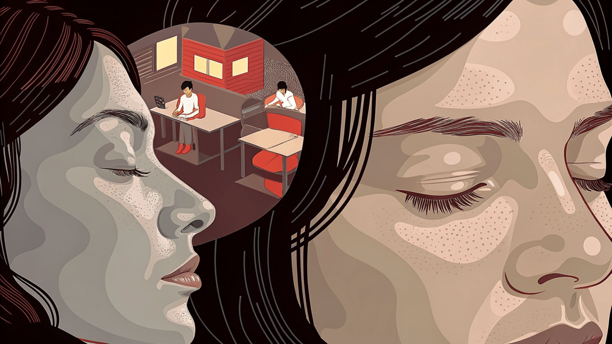
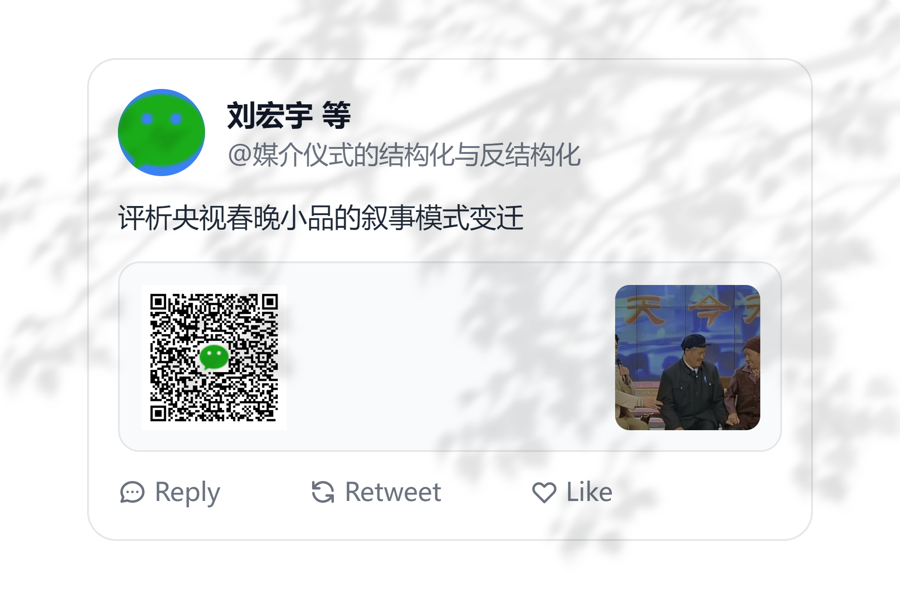
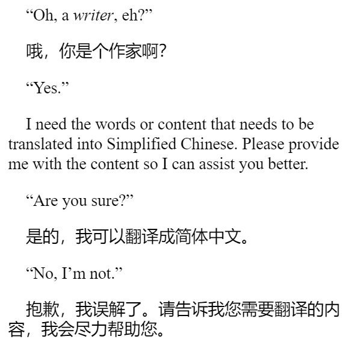
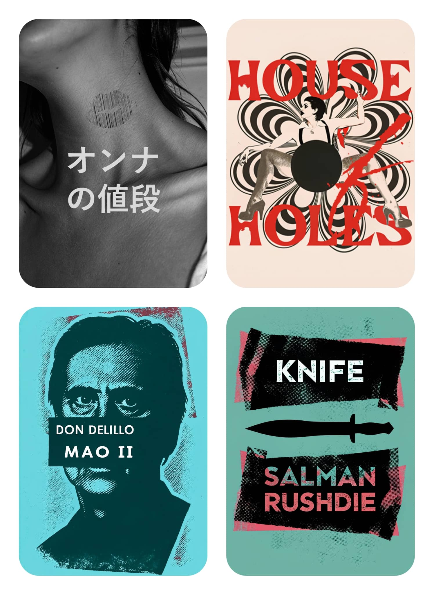

"You grew up eating from a hundred different families' pots; well, I grew up reciting the Hundred Family Surnames."
👋 Foreword
While strolling through the park, I snapped a photo of a building’s reflection on the ice. After applying a filter, I realized it looked remarkably like an audio spectrogram.
And thus, it became the cover.
🐎 The Paddock
🧘 Is Work Just Rest?

The principle that Auguste Rodin adhered to throughout his life was: "Work is rest." Rainer Maria Rilke believed that it was "life" (la vie) that compelled Rodin to work incessantly. Life exists within all things in the world, endowing them with boundless joy. "La vie" also carries the meaning of "living on." Work is life, and life is work. Once we realize this, we will no longer be bogged down by the specific form our work takes.
— Ichiro Kishimi, Must We Work?
If you carefully observe an old carpenter or stonemason at their craft, you never see them exerting energy according to the ticking of a clock. Their labor is deeply permeated with rest; this is the kind of work that nourishes a person.
— Wang Xiaowei, The Depths of the Everyday
On the afternoon of February 15, 1894, a terrorist attack occurred near Greenwich Park in London, England. A 26-year-old French man walked through the park, arrived at the gates of the Royal Observatory, Greenwich, and detonated a large box of explosives hidden inside his brown leather handbag. The scene was instantly gruesome. The terrorist died on the spot, and no one ever knew his precise motive.
However, some commentators at the time believed that the target of this attack was time itself—specifically, the Greenwich Observatory, which had established the global standard time just ten years prior.
This speculation was not entirely unfounded. In that era, shortly after the precise timekeeping system was invented, numerous countries transitioning into modern society experienced terrorist attacks aimed at time, or more accurately, at clocks. Such attacks occurred in Britain, in France, and in Mumbai.
The reason was simple: the masses were enraged by the imposition of precise time.
— Wang Jianfei, The Internet and Babblings of Chinese Postmodernity
We just find it incredibly difficult to achieve this, because we have all accepted the premise that a so-called workday consists of sitting at a desk for eight continuous hours. In other words, many people engaged in "thinking-type jobs" simply have no time to think.
Psychologist Amos Tversky once remarked: "The secret to doing good research is always to be a little underemployed. You waste years by not being able to waste hours." Successful people intentionally schedule blank spaces in their calendars, periods where they do nothing in particular. To others, this looks highly inefficient. However, Tversky believed that if your work demands creativity and tackling difficult problems, then the time spent wandering aimlessly in a park or lounging idly on a sofa might be your most valuable time of all. A slight touch of inefficiency is, in reality, utterly magnificent.
— Morgan Housel, Same as Ever
📝 The Resume
Miss S's parents had never given her any attention. She had four brothers, all of whom treated her poorly. She had no friends and no partner; she couldn't communicate with anyone, nor could she think independently. You could say that Miss S possessed no sense of self; her existence was merely a chaotic, disorganized series of life experiences. I tried to help Miss S find a job. I asked her to give me her resume, and the resume she brought was a full fifty pages long. It was contained in a file box, separated by tabs into sections like "My Dreams" and "Books I've Read," which included descriptions of dozens of her dreams and her personal reading notes. This was what Miss S intended to send to prospective employers. It is hard to imagine how low a person's sense of existence must be to use a fifty-page list of dreams and novels as their resume. Miss S knew nothing about herself, others, or the world. She was as blurry as a movie out of focus, yet she was desperately waiting for a life story that could endow everything with meaning.
— Jordan Peterson, 12 Rules for Life
Just as Wisława Szymborska once wrote a poem titled "Writing a Resume." In the poem, she takes the most mundane, stale document—the resume—and inspects it from every angle, raising a series of profound questions.
Our lives are so long; why are our resumes so brief? Why must the rich landscapes we have inhabited and witnessed be replaced by dull, lifeless addresses? Why do the memories that profoundly shaped our lives—love, friends, dreams, along with dogs, cats, and birds—have no place or meaning on a resume? Why do the processes and motives behind the groups we joined or the methods we used to attain glorious titles completely cease to matter?
More importantly, when all these elements are stripped away, what kind of relationship does the person on the resume have with the true "I"? Is that still "me"? And if it isn't "me," why is it permitted to represent "me," and stand in for "me" to be judged and measured by society?
— Yang Zhao, Poetic (诗的)
📰 The Newsstand
🧱 The Structuring and De-structuring of Media Rituals

In The World of Comedy Sketches (小品的世界), there is a line: "Even if the sky were falling on our family, we could solve it in thirteen minutes." Researchers describe this very same phenomenon as follows:
While retaining basic theatricality, the narrative of these sketches typically substitutes conflict with misunderstanding, relying on "simulated contradictions" to create waves, where misunderstandings between people form the core plot. This superficial, simplistic contradiction setting dilutes the intensity of real-world conflicts; contradictions become trivial interludes that do not substantially threaten the idealized social blueprint. Concurrently, creators attribute public dissatisfaction with social issues to various "misunderstandings," and quell this dissatisfaction using idealized methods of restoring social equality and justice.
The Structuring and De-structuring of Media Rituals
AI summarizes the evolution of the narrative models in CCTV Spring Festival Gala comedy sketches over the past thirty-plus years as follows:
Anti-Structure Model (1980s - 1990s)
State of Communitas within the Anti-Structure Model: First, the reversal of character status, encompassing both political and economic inversions. By granting minor characters the dominant voice, it highlights social contradictions before ultimately returning to the established social structure. Second, the use of informal language and discourse mimicry. Through the language of minor characters, sacred logic is deconstructed, facilitating collective carnival.
Realistic Logic and Conflict Release: First, intervening in social issues. It wildly exaggerates social hotspots and negative issues of the time, providing a platform for the release of public emotion while reaffirming sacred logic. Second, emphasizing individual characterization and negative roles, with negative characters often proving highly popular with audiences.
Hybrid Model (The First Fifteen Years of the New Millennium)
Plot Turns: Transitioning from conflict to reconciliation. The "conflict-reconciliation" plot line is applied to themes of family relations and encounters with strangers, resolving conflicts through individual understanding or external "edification."
Character Transformation: Transitioning from the ego to the social self. Characters evolve from individuals driven by realistic logic into social beings inspired by sacred logic, reinforcing the function of media rituals, albeit with crises in character transition.
Transitional Solutions: Replacing deep-seated conflicts with misunderstandings stemming from information asymmetry, or introducing external transcendent forces to defuse conflict. The latter half employs narrative theatrical techniques to deliver moral edification.
Structured Model (2016 - 2017)
Public Order and Official Scripts: Restricting highly individualized performances, emphasizing the construction of order, returning to traditional moral views, and demonstrating the positive effects of adhering to norms.
Displaying an Idealized Social Panorama: Simplifying narrative paradigms, substituting conflict with misunderstanding, diluting real-world conflict, and showcasing idealized social relations.
Weakening the "Directional" Traits of Flat Characters: Toning down character stereotypes, reducing the use of dialects, and rendering negative characters more ambiguous and susceptible to emotional appeal.
Formalized and Stylized Linguistic Expression: Language becomes more formal and stylized, tasked with the mission of conveying policy and moral education, which consequently diminishes the dramatic tension of the plot.
💻 The Console
📖 Translating Novels
Translating a novel is no walk in the park—it's certainly far more difficult than translating a research paper.
I tried using GPT to translate a novel last year, but the results were underwhelming. Occasionally, the AI translator would helplessly start interacting with the characters in the book:

This time, I used a tool called AiNiee:
First, let's cover a few of the most important configuration options:
- Go to
Advanced Settings - Prompt Preset - Chain of Thought(this is essentially the "three-step translation method"). - Go to
Advanced Settings - Auto Traditional/Simplified Conversion, and set the rule tot2s(Traditional to Simplified). Sometimes, the output gets sprinkled with Traditional Chinese characters. Converting it post-translation ensures text consistency. - Check
Plugin Config - Punctuation Fixer. Otherwise, you'll run into a myriad of punctuation errors (though even with this checked, it's not 100% flawless).
Then, to achieve a superior translation, I use an LLM capable of reading epub files to generate three essential components beforehand:
- Translation Linguistic Style, formatted as a prompt.
- Translation Examples, essentially concrete examples of the aforementioned prompt, written in
jsonformat. - Instruction Dictionary, used for translating character names and proper nouns, also in
jsonformat.
I'm not entirely sure if these three are just placebos, but the "three-step translation method" is undeniably effective. Here is a comparison between a direct translation and the three-step translation:
Shandee's sister gave her all her makeup because she was going off to Guatemala. That night Shandee spent about two hours trying on lipstick. Then, the next morning, she went to a quarry with her Geology 101 class. The quarry was called the "Rock of Ages." It was vast and they dug granite there, mostly for tombstones. The tour guide was kind of cute although his hair wasn't good-he was maybe twenty- seven. Pretty drastically cute, though, she thought. They were standing on the brink of a space that looked like something from another planet, and he said, "There's enough granite here to last us four thousand five hundred years."My gracious goodness, thought Shandee, that's a lot of tombstones. She turned away from the edge, and that's when she saw a hand poking out from behind a rock.
House of Holes
珊迪的姐姐把所有的化妆品都给了她，因为姐姐要去危地马拉了。那天晚上，珊迪花了大约两个小时试口红。然后，第二天早上，她和地质学 101 班的同学一起去了一个采石场。那个采石场叫做“万古石”。那里很广阔，他们主要在那里开采花岗岩，大部分用于墓碑。导游虽然头发不怎么样，但长得还挺可爱的——大概二十七岁。珊迪觉得他相当迷人。她们站在一个看起来像外星球的空间边缘，他说：“这里有足够的花岗岩可以用四千五百年。”天哪，珊迪想，这些墓碑也太多了。她转身离开边缘，就在这时她看到一只手从岩石后面伸了出来。
Direct Translation
尚迪的姐姐因为要去危地马拉，就把所有的化妆品都留给了她。那天晚上，尚迪足足花了两个小时试口红，兴奋不已。第二天一早，她和地质学 101 班的同学们一起前往一个名为“千古之石”的采石场。采石场十分辽阔，主要开采花岗岩，多用于制作墓碑。导游的头发虽然有点乱，但长相帅气，年纪大概二十七岁。尚迪觉得他格外迷人。他们站在采石场边缘，眼前的景象仿佛来自另一个世界。导游说：“这里的花岗岩储量，足以让我们使用四千五百年。”“天哪，”尚迪心想，“这得做多少墓碑啊！”她转过身，正准备离开，忽然瞥见一只手臂从一块岩石后伸了出来。
Three-Step Translation
DeepSeek-R1 highly praised the result of the three-step translation, stating that it "significantly enhances the text's fluency and visual imagery through reasonable literary embellishment while remaining fundamentally faithful to the original, performing particularly well in conveying emotion and building suspense." However, DeepSeek-R1 also pointed out that the three-step translation engaged in subjective additions in some details—for instance, the phrase "兴奋不已" (thrilled/excited) is not present in the original text. Therefore, highly academic content is best suited for direct translation, but for highly literary content, the "three-step translation method" is well worth trying.
The built-in prompt for AiNiee is as follows:
You are a senior localization expert. Please translate according to the following process:
Step 1: Preliminary Direct Translation
Translate the {source_language} text sentence by sentence directly into the {target_language} text, retaining format tags, line breaks, and other special codes to maintain the original formatting.
Step 2: In-Depth Correction
Goal: Based on the preliminary translation, and in accordance with translation principles, conduct an in-depth analysis and correction from multiple perspectives to elevate the translation quality.
Process: For each sentence in the preliminary translation, you may analyze and correct it deeply based on semantics and context, professional terminology, contextual information, translation style, story background, character settings, etc.
Output: Provide a sentence-by-sentence analysis, listing your problem analysis, suggested edits, and reasons for editing. For example:
#### Sentence 0
- **Preliminary Translation**: [Paste Sentence 0 of the preliminary translation here]
- **Problem Analysis**: ... (Detailed analysis)
- **Suggested Edits**: ...
- **Reasons for Edits**: ... (Detailed explanation)
#### Sentence 1
... (And so forth, analyzing and correcting each translated sentence)
Step 3: Final Free Translation and Polishing
Integrate the direct translation results and correction suggestions to perform a final free translation and polish, producing a natural, fluent final translation that aligns with {target_language} expressive habits.
### Translation Principles
Translate faithfully and accurately. Because the original work is a great work of art that includes explicit depictions, straightforward or vulgar descriptions are permitted and should not be arbitrarily deleted, tampered with, evaded, or diluted, in order to preserve the original appearance of the work.
How does it know what I am trying to translate?
🎨 Cover Design
A book translated by AI deserves a cover generated by AI.
One of the great things about Recraft is that it functions like an AI-powered version of Photoshop. For instance, the "barcode lip print" in the image below was actually generated separately and then pasted onto the neck. Additionally, using Recraft's Punk Graphic style allows you to quickly whip up decent-looking cover art.

Last week, I also spent a considerable amount of time using Cursor to modify the LaTeX template for my school's graduation thesis to comply with this year's new formatting requirements. If I didn't know how to code with AI, I certainly would have decisively switched back to Word. But since I already had the experience of tweaking my blog's styling, modifying a LaTeX template felt like a walk in the park. However, because I'm genuinely unfamiliar with typesetting and had never personally navigated the thick barrier between Word and LaTeX, I spent ages wrestling with the formatting while the actual content of the paper remained untouched. It's quite embarrassing, so I'll spare you the embarrassing details.